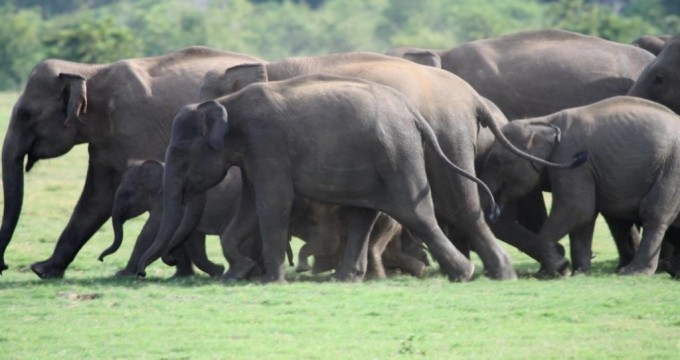
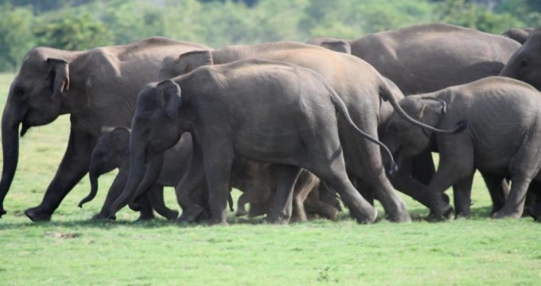
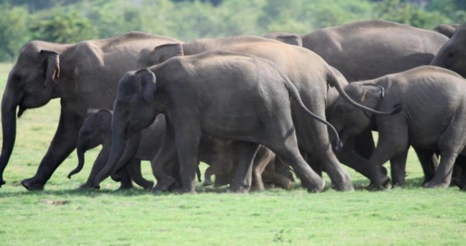
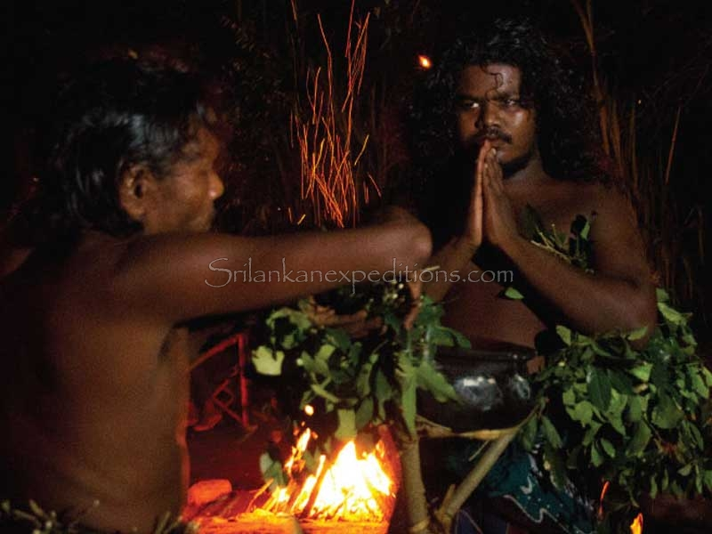
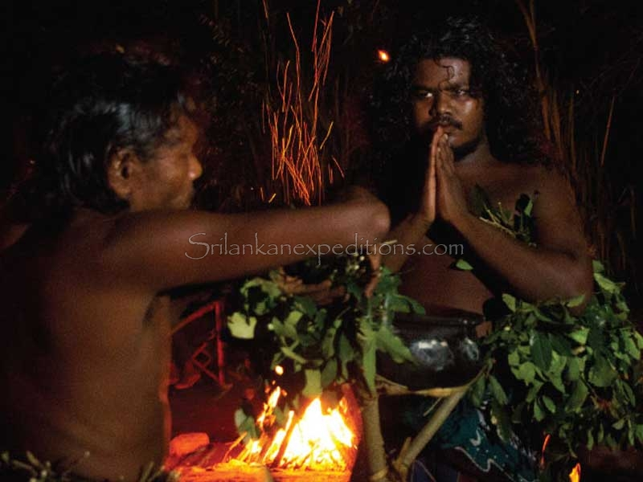

After breakfast, Transfer to Mahiyanganaya, where remaining ancestors of Sri Lanka lives
Boat safari, self boating + fishing
Wild Elephant watching

Night jungle B.B.Q with Fresh Lake Fish, wild meat, meat, Gale roti, organic salad ect... and Night camping at huge Sorabora wewa lake with veddas fire dance
 


-